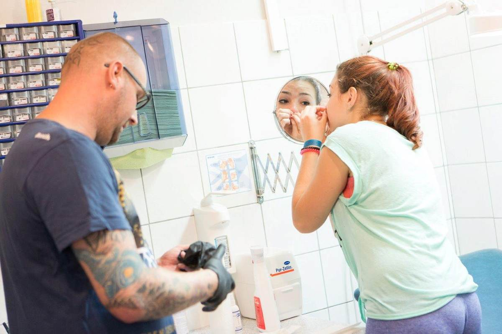
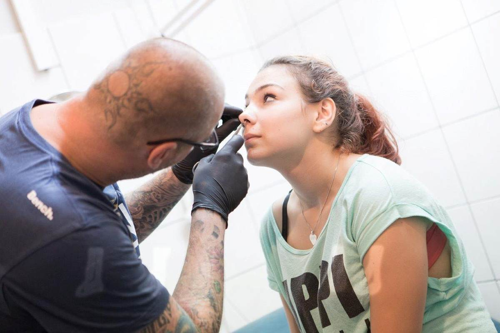
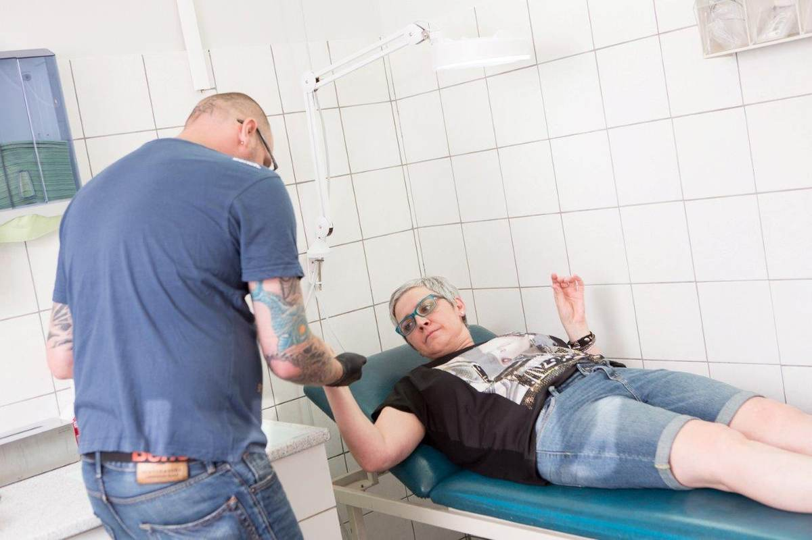
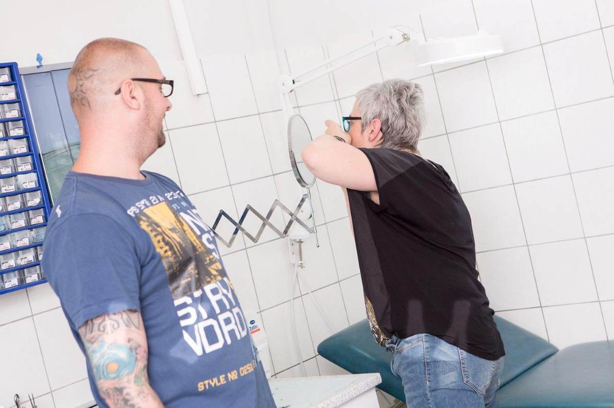
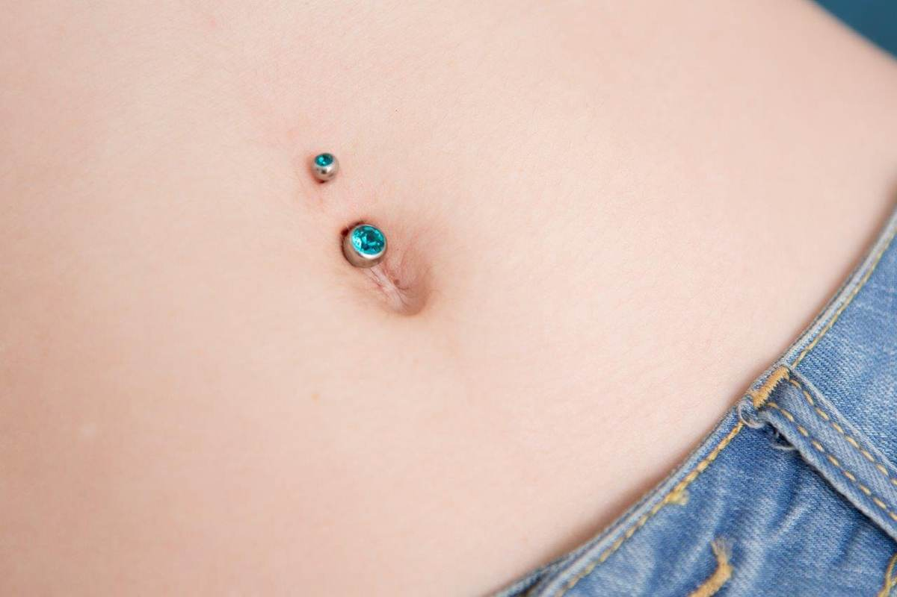

Rechte Tafel · Piercing Avalon · im CORNER
Piercing in Scheibbs.
Seit 1999.
Daniel Graf piercet seit 1999 – über 25 Jahre Handwerk, ruhige Hand, ehrliche Beratung. Vom Ohr über Nase und Bauchnabel bis zum Intimpiercing bekommst du bei Avalon alle Varianten, in aller Ruhe und mit klarer Aufklärung vorab. Termine gibt es ausschließlich nach telefonischer Voranmeldung.

Piercing Avalon · seit 1999Ablauf
Vier Schritte. Kein Stress.
Durchklingeln
Kurz durchklingeln, Wunsch besprechen, Termin fixieren – ohne Wartezimmer-Stress.
Anzeichnen
Platzierung, Erstschmuck und Heilungsdauer werden vorab geklärt und am Spiegel angezeichnet.
Der Stich
Mit Handschuhen, vorbereitetem Besteck und viel Routine – konzentriert und zügig.
Pflege danach
Klare Pflegehinweise für die Heilung; bei Fragen bist du jederzeit willkommen.
Hygiene
Sauber. Vorbereitet.
Bei jedem Piercing. Steht nicht nur da, sieht man auf den Fotos.
Für deinen Termin vorbereitet, liegt sauber bereit.
Liege, Ablage, Werkzeug – vor dem Stich sauber vorbereitet.
Größe und Form nach Piercing und Körperstelle, in der Beratung abgestimmt.
Aus dem Studio
Seitwärts wischen für mehr






Nur mit Termin. Nur telefonisch.
Daniel Graf · Piercing Avalon · Hauptstraße 40 · 3270 Scheibbs
Gut zu wissen
Fragen & Antworten.
Geht das auch ohne Termin?
Was wird alles gestochen?
Wie sauber wird gearbeitet?
Welcher Schmuck kommt rein?
Wie lange heilt ein Piercing und wie pflege ich es?
Ab wie vielen Jahren geht ein Piercing?
Was kostet ein Piercing?
Linke Tafel · im selben Haus
CORNER Mode.Schuh.Treff
Damen, Herren, junge Mode – handverlesen, zum Anprobieren, im selben Gebäude. Mo–Fr 9:30–18:00, Sa 9:00–12:30.
Zurück zur Startseite · Karte unter Kontakt.